Bal: MLSZ adatbank fotó · Jobb: Facebook profilkép. #1–9 arc-ellenőrzött találat, #10–21 legjobb névtalálat — nézd meg, egyezik-e az arc.
#1 LATINOVITS ANTAL
Magas ✓
BEAC · BLSZ III. OSZTÁLY 1. CSOPORT · Mezőny
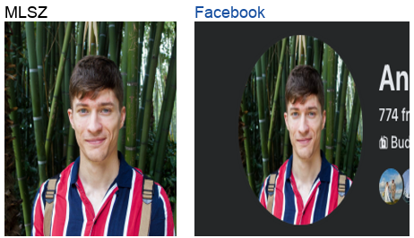
#2 ALE MÁTÉ
Közepes
KÖZTERÜLET SK · BLSZ III. OSZTÁLY 3. CSOPORT · Mezőny
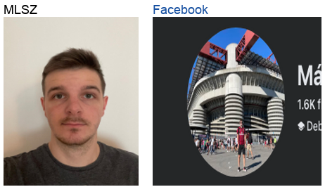
#3 BALASKA MÁTÉ
Közepes
PESTSZENTIMREI SK · BLSZ II. OSZTÁLY · Mezőny
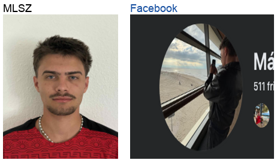
#4 HÁMORI TAMÁS RISTO
Közepes
TFSE II. - TENT BUDAPEST · BLSZ II. OSZTÁLY · Mezőny
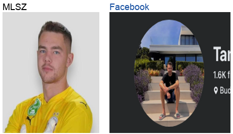
#5 KULÁNDA MÁTÉ
Közepes
PALOTA SE · BLSZ III. OSZTÁLY 2. CSOPORT · Mezőny
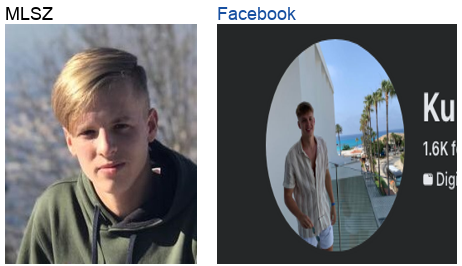
#6 SZTANKÓ DÁVID SÁNDOR
Közepes
THSE 2000 · BLSZ III. OSZTÁLY 1. CSOPORT · Mezőny
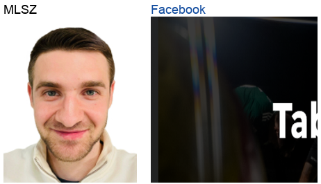
#7 DIAMANT ZSOLT
Alacsony
UDSE-GÁZGYÁR · BLSZ III. OSZTÁLY 2. CSOPORT · Mezőny
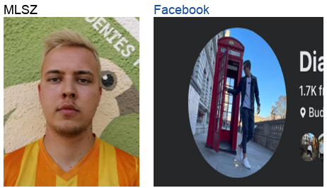
#8 KÖNTÉS BALÁZS
Alacsony
POLGÁRI SC · BLSZ III. OSZTÁLY 1. CSOPORT · Mezőny
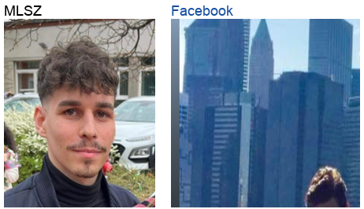
#9 SZILÁGYI GERGŐ
Alacsony
PESTSZENTIMREI SK · BLSZ II. OSZTÁLY · Kapus
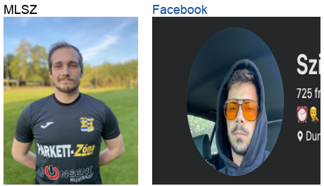
#10 BOKOR ZSOLT
Kézi ellenőrzés
3R SPARTACUS AFC · BLSZ III. OSZTÁLY 3. CSOPORT · Mezőny
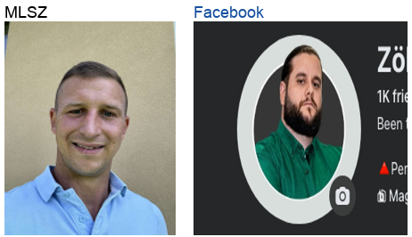
#11 DARÁZS SÁNDOR GYÖRGY
Kézi ellenőrzés
RÁKOSSZENTMIHÁLYI SC · BLSZ IV. OSZTÁLY 3. CSOPORT · Kapus
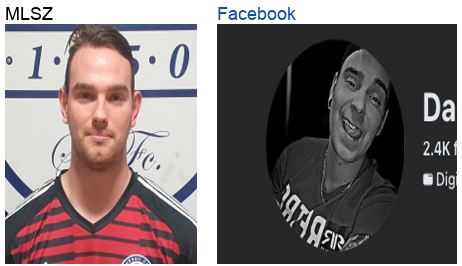
#12 ERDŐSI ÁKOS MÁRK
Kézi ellenőrzés
LUDOVIKA SE II · BLSZ III. OSZTÁLY 3. CSOPORT · Mezőny
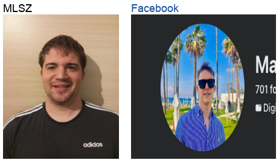
#13 GRÉCZY MÁRTON ZSOLT
Kézi ellenőrzés
HUNGARIAN TALENTS FC · BLSZ III. OSZTÁLY 3. CSOPORT · Mezőny
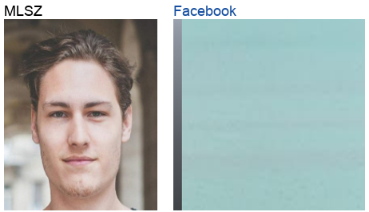
#14 KISS GYULA
Kézi ellenőrzés
LIONS FC · BLSZ III. OSZTÁLY 2. CSOPORT · Mezőny
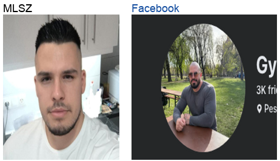
#15 KÁLMÁN ZSOLT CSABA
Kézi ellenőrzés
AIRNERGY FC · BLSZ II. OSZTÁLY · Mezőny
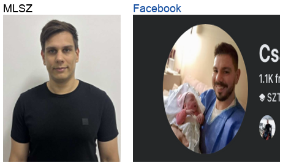
#16 MOLNÁR ANDRÁS
Kézi ellenőrzés
POLGÁRI SC · BLSZ III. OSZTÁLY 1. CSOPORT · Mezőny
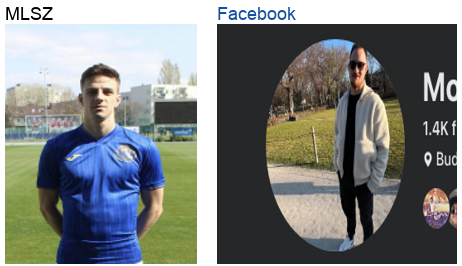
#17 MÁTYÁS DÁNIEL
Kézi ellenőrzés
PALOTA SE · BLSZ III. OSZTÁLY 2. CSOPORT · Mezőny
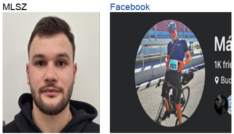
#18 SZÜSZ MARCELL TAMÁS
Kézi ellenőrzés
AIRNERGY FC · BLSZ II. OSZTÁLY · Kapus
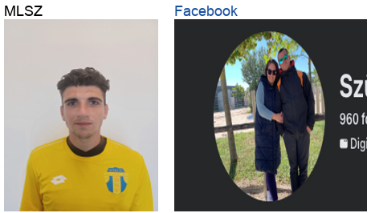
#19 URBÁN ISTVÁN
Kézi ellenőrzés
TESTVÉRISÉG-ÚJPALOTA SE II. · BLSZ II. OSZTÁLY · Kapus
#20 VARGA ZSOMBOR
Kézi ellenőrzés
UDSE-GÁZGYÁR · BLSZ III. OSZTÁLY 2. CSOPORT · Mezőny
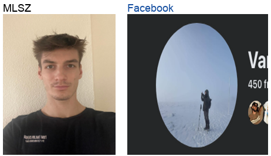
#21 ZILAHI BENCE
Kézi ellenőrzés
UNIONE FC II. · BLSZ II. OSZTÁLY · Mezőny
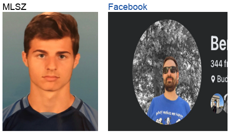